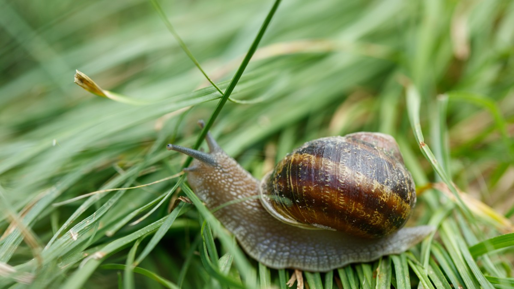
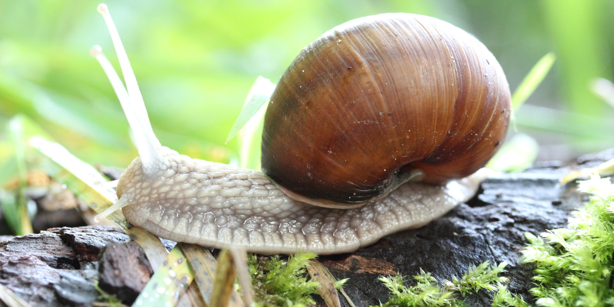
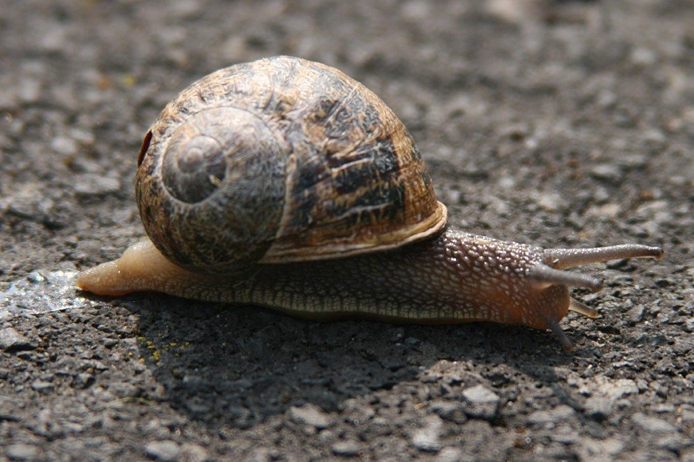

An Introduction to Snails
A snail is, in loose terms, a shelled gastropod. The name is most often applied to land snails, terrestrial pulmonate gastropod molluscs. However, the common name snail is also used for most of the members of the molluscan class Gastropoda that have a coiled shell that is large enough for the animal to retract completely into. When the word "snail" is used in this most general sense, it includes not just land snails but also numerous species of sea snails and freshwater snails.
Habitat
Snails can be found in a very wide range of environments, including ditches, deserts, and the abyssal depths of the sea. Although land snails may be more familiar to laymen, marine snails constitute the majority of snail species, and have much greater diversity and a greater biomass. Numerous kinds of snail can also be found in fresh water.
Diet
Snails feed at night. Most terrestrial snails are herbivorous, but others are omnivorous and some even carnivorous. You will likely find snails around your garden as this offers them plenty of fresh plants and leaves to eat. The herbivorous snails devour a wide variety of live plant parts: leaves, stems, plant crops, bark, and fruits. Many consume fungi and mushrooms, and others may occasionally add algae, although these are an important food for freshwater snails.